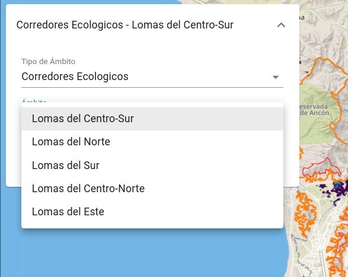
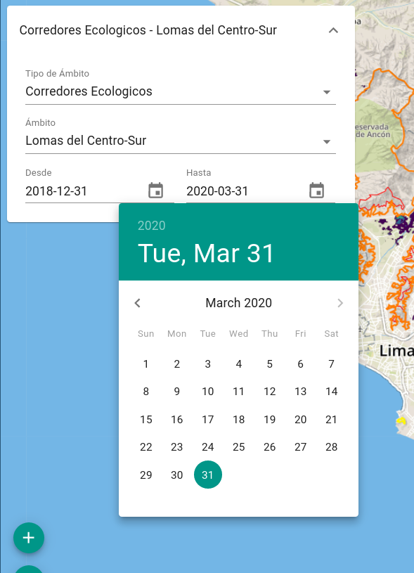
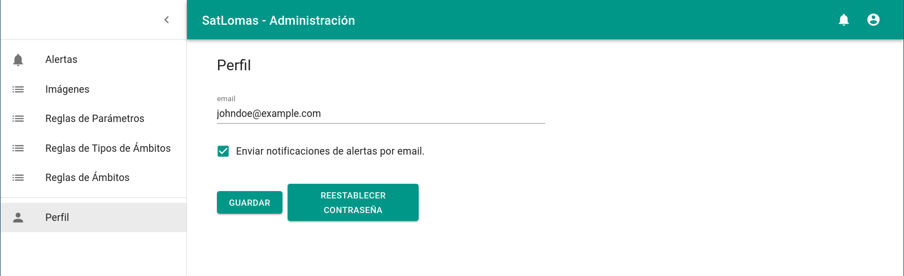
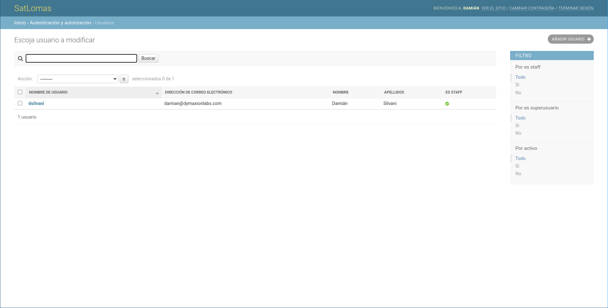
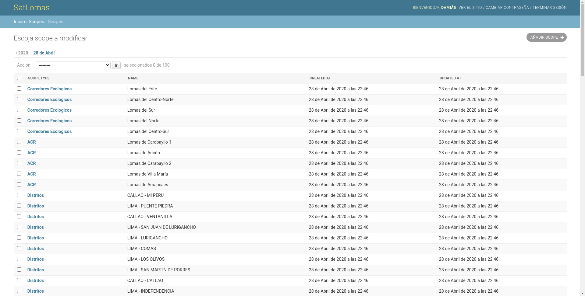

Uso¶
En esta sección se describen las diferentes vistas que conforman el frontend de la plataforma, y de qué manera se pueden utilizar las herramientas provistas para visualizar y analizar los resultados de los procesos automáticos aplicados sobre imágenes satelitales y de las estaciones meteorológicas.
Este texto está dirigido tanto para usuarios anónimos, como para usuarios registrados y aquellos con el rol de administrador.
Inicio¶
En la página de inicio se listan diferentes componentes que forman parte de la plataforma. Desde aquí se puede acceder a los mapas del módulo de Observación Terrestre, como el mapa de Cobertura Verde o el mapa de Cobertura de Loma Perdida, y por otro lado, al Mapa y el Dashboard del módulo de Estaciones Meteorológicas.
Observación terrestre¶
Cobertura Verde¶



Cobertura de Loma Perdida¶

Detección de Cambios¶
Estaciones Meteorológicas¶
Mapa¶


Dashboard¶

Usuarios¶
Reglas¶
Reglas de Parámetro¶
Reglas de Tipo de Ámbito¶

Reglas de Ámbito¶

Alertas¶
Diagrama de verificación de regla¶
Diagrama para reglas de parámetro¶
Diagrama para reglas de tipo de ámbito¶
Diagrama para reglas de ámbito¶

Imágenes¶


Perfil¶

Administradores¶
Panel de administración¶
Usuarios¶


Ámbitos¶


Estaciones meteorológicas¶